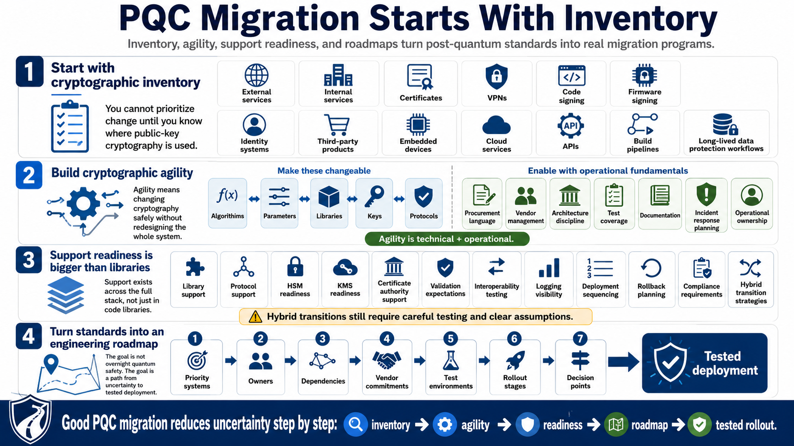

Standards in Real Migration Programs
Connecting to LMS... Progress: in progress

Narration
A real PQC migration program starts with cryptographic inventory. Organizations need to know where public-key cryptography is used before they can prioritize change. Inventory should include external services, internal services, certificates, VPNs, code signing, firmware signing, identity systems, third-party products, embedded devices, cloud services, APIs, build pipelines, and long-lived data protection workflows.
Cryptographic agility is the ability to change algorithms, parameters, libraries, keys, and protocols without redesigning the entire system. Agility is not only a software feature. It is also procurement language, vendor management, architecture discipline, test coverage, documentation, incident response planning, and operational ownership. A system that cannot change cryptography safely will struggle with PQC and with future cryptographic transitions.
Library and protocol support are necessary but not sufficient. HSM and KMS readiness, certificate authority support, validation expectations, interoperability testing, logging visibility, deployment sequencing, rollback planning, and compliance requirements all matter. Hybrid transition strategies may help manage compatibility, but they still require careful testing and clear assumptions about what protection the hybrid design provides.
Standards become useful when they are translated into engineering roadmaps. A roadmap should identify priority systems, owners, dependencies, vendor commitments, test environments, rollout stages, and decision points. The goal is not to declare that the organization is quantum-safe overnight. The goal is to reduce uncertainty and build a path from inventory to tested deployment.